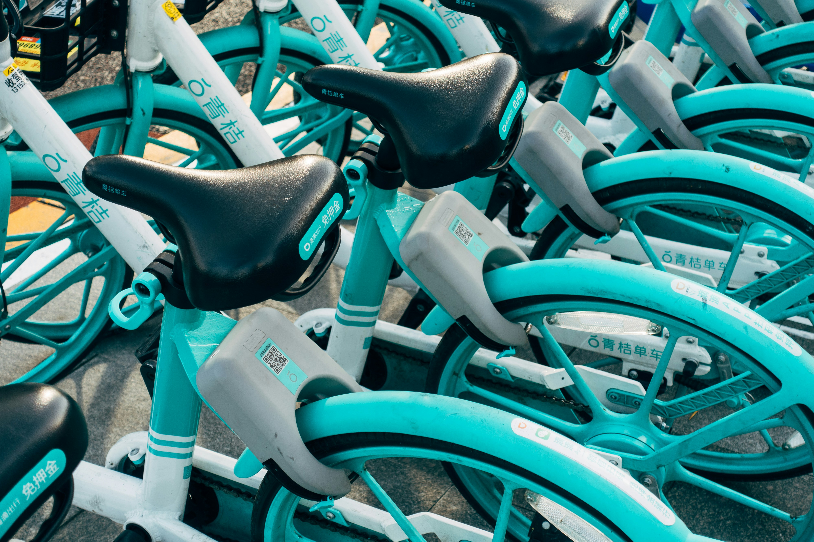
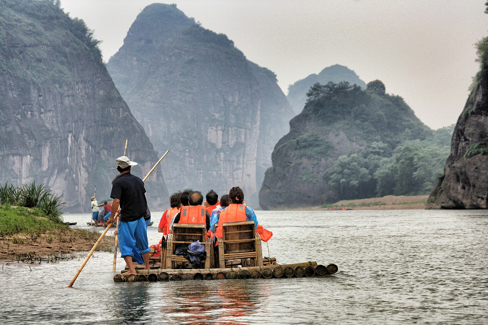

Getting Around Taniti
Explore your transportation options for navigating Taniti efficiently.

Public Transit
Buses and train services operate across the island with frequent stops at major attractions.
Car Rentals
Various car rental agencies offer daily and weekly rates for visitors.
Taxis & Rideshares
24/7 service available, with designated pick-up zones at key locations.

Bike Rentals
Eco-friendly option available near tourist hubs for exploring at your own pace.

Shuttle Services
Hotels and major attractions provide free or low-cost shuttle rides.

Guided Tours
Guided walking or bus tours exploring major landmarks.
Download our offline map for an easy reference guide to transportation routes.